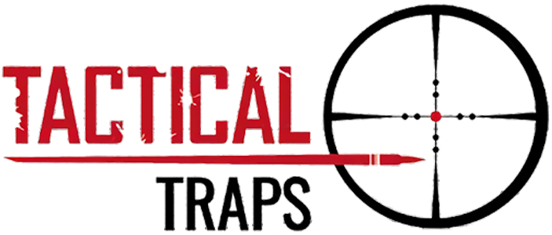

BLUETOOTH LOCK APPLICATION
Scanning for devices...
{{ devList.constructor.getDisplayName(device) }}
{{ devList.constructor.extractSerialNumber(device) }}
Connecting to: {{ selectedDevice.customName || devList.constructor.extractSerialNumber(selectedDevice) || 'Device' }}
No Bluetooth devices were detected.
Make sure your lock is powered on and nearby.
Make sure your lock is powered on and nearby.
{{ testOutput }}